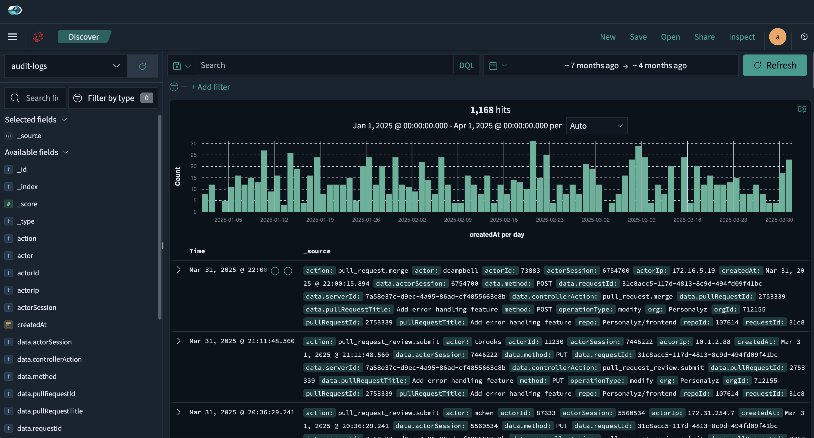
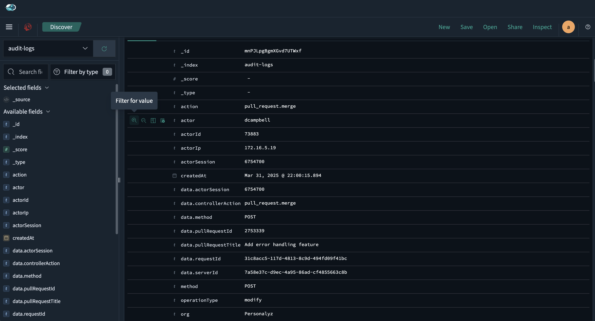
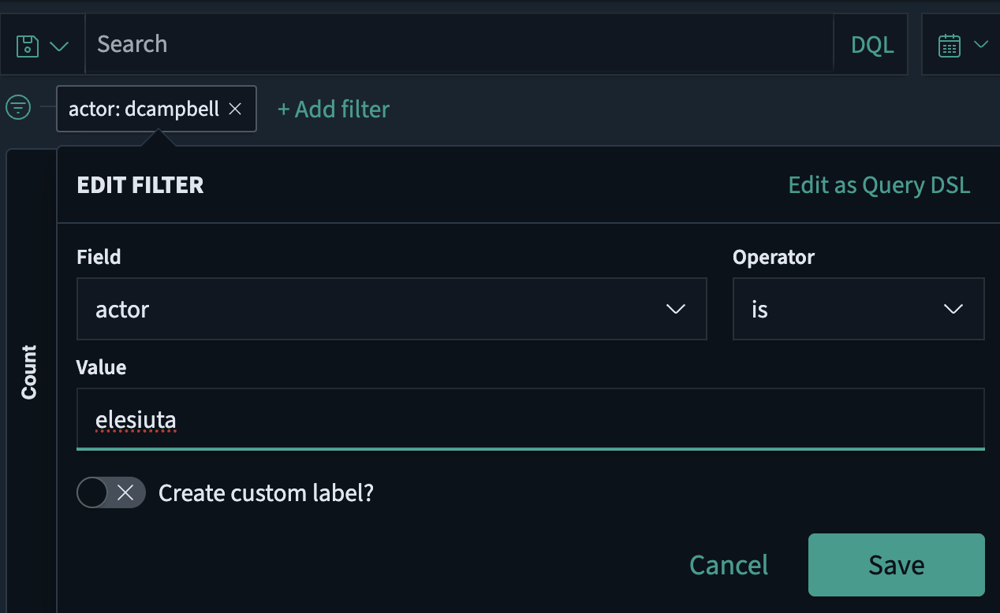
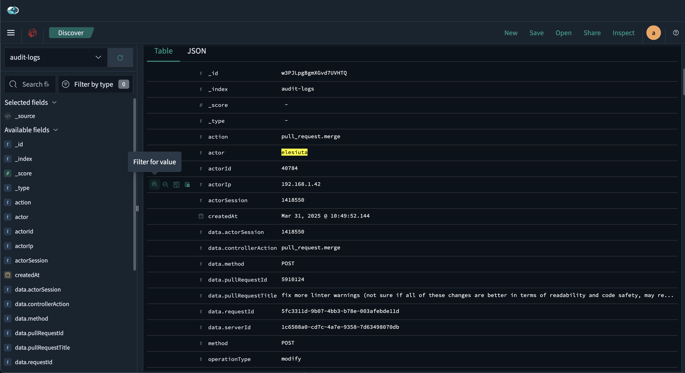
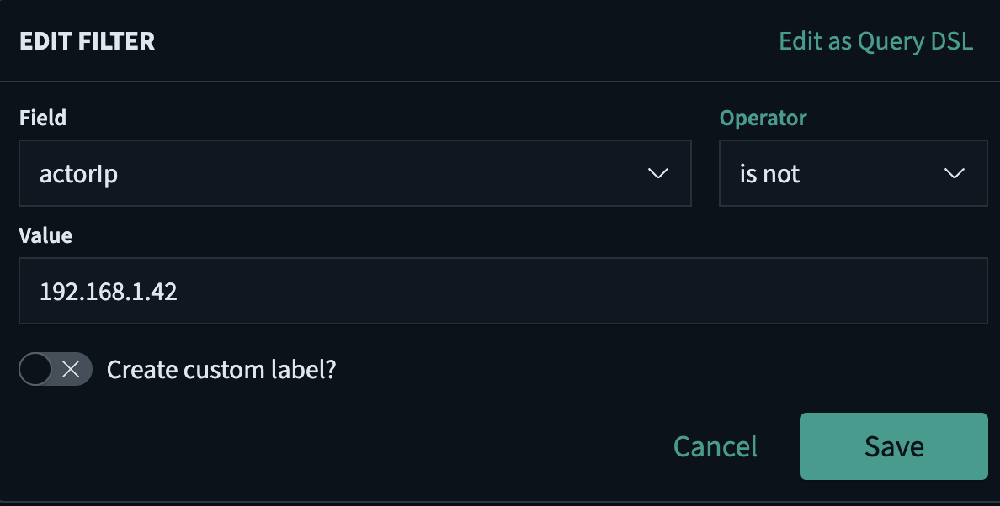
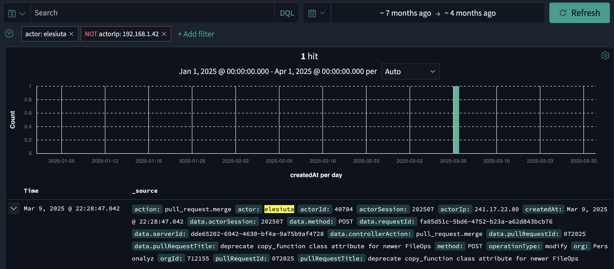
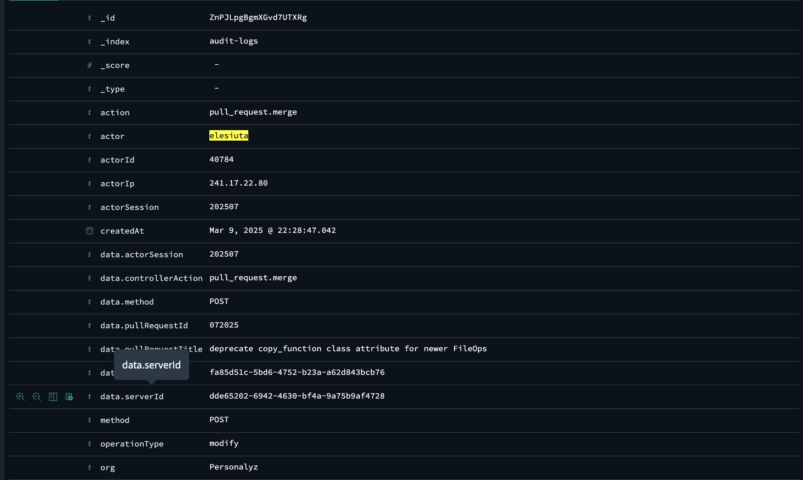

>_ Identify if Erik was the person who made the malicious change in the git source files.
So now we know how the data was exfiltrated — a shady commit in a GitHub repo. And, going by the reference logs, it looks like Erik is responsible!
But Erik is the developer who gave us the compromised repository — and he made all the commits in the log. So is he really bad at covering his tracks? Or is he being framed?
We could use some proof...
Luckily for us, GitHub keeps logs of all actions users do on the codebase — which is pretty helpful for situations like this! Personalyz imports the logs from GitHub and stores them in our log dashboard Insightful Horizon, so that's where you're headed now.
Unfortunately, Erik didn't tell you which repository that .git directory came from, and he's been out of office and unreachable for the last few days. So you've got the audit logs for all the repositories he's worked on in the last six months to sift through to figure out what really happened here.
Into the audit logs! Head over to the Insightful Horizon log dashboard. Dig deep and find the evidence — who really added that malicious code to the application?
Once you think you have a solid case, use the IP address of the insider as the flag.
For this solution, we are directed to the Insightful Horizon log dashboard (links have been removed from this write-up; the Target team provided 3 available OpenSearch dashboards). We will be searching in the audit-logs index.

OpenSearch — selecting the audit-logs index | Click to enlarge
Let's open a sample log file to see what data is available:

Sample audit log — key-value pairs including actor and actorIP | Click to enlarge
Here is what we know:
The log shows key-value pairs for actor and actorIP — let's filter on those. First, filter by the actor field:

OpenSearch — filter: actor = elesiuta (derived from dcampbell format in first log)

Filtered results — log entries matching actor: elesiuta | Click to enlarge
We have log entries matching elesiuta. Now narrow further using actorIP. We know internal employees use a private IP. The address 192.168.1.42 is a Class C private IP per IANA private-use ranges — not external. Configure the operator to is not equal to 192.168.1.42:

OpenSearch — second filter: actorIP is not the known private IP address
We got 1 hit! Open the log entry to find the flag:

Single matching log entry — actor elesiuta logging in from an external IP | Click to enlarge

actorIP field value — this is our flag | Click to enlarge
The flag is the value of the actorIP address from the log entry.
In this challenge, we reviewed audit log entries to find the adversary's IP address that made the changes to the git repository.
This tactic falls under TA0001 — Initial Access as Shadow Gopher leveraged a compromised user's account to make an unauthorized change to the source code in the GitHub repository.
This technique falls under T1195 — Supply Chain Compromise as Shadow Gopher modified existing source code in a third-party (GitHub) repository and used Base64 to obfuscate the malicious commit.
Shadow Gopher modified a third-party repository by accessing a compromised user's account to add obfuscated source code, encoded in Base64, to obtain the capabilities to use the code for persistence and exfiltration.
| Mitigation | Description |
| M1018 — User Account Management | Controls such as enforcing Principle of Least Privilege, strong password policies, managing dormant/orphaned accounts, account lockout policies, MFA, and IAM tools that facilitate SSO can help mitigate credential compromise impact. |
| M1016 — Vulnerability Scanning | Vulnerability scanning such as SAST and DAST can provide insight into common code vulnerabilities and may help identify malicious changes before deployment. |
| Data Source | Description |
| DS0022 — File Metadata | Use of integrity checking mechanisms or scanning code for malicious signatures. |
{kind=link}
{kind=link}
{kind=link}
{kind=link}
{kind=link}